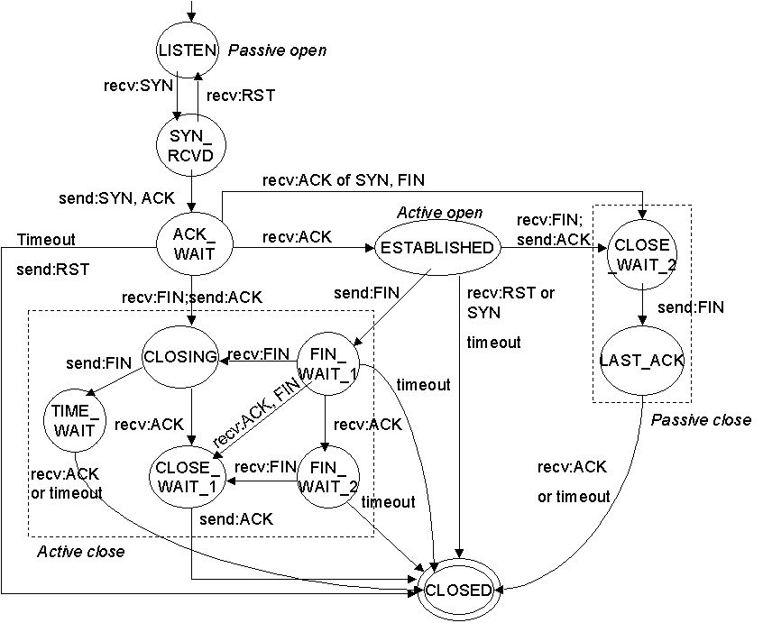

tcpdump使用技巧 By 潜水大叔
一般情况下，非HTTP协议的网络分析，在服务器端用tcpdump比较多，在客户端用wireshark比较多，两个抓包软件的语法是一样的。
基本语法
过滤主机
- 抓取所有经过eth1，目的或源地址是192.168.1.1的网络数据
tcpdump -i eth1 host 192.168.1.1
- 指定源地址
tcpdump -i eth1 src host 192.168.1.1
- 指定目的地址
tcpdump -i eth1 dst host 192.168.1.1
过滤端口
- 抓取所有经过eth1，目的或源端口是25的网络数据
tcpdump -i eth1 port 25
- 指定源端口
tcpdump -i eth1 src port 25
- 指定目的端口
tcpdump -i eth1 dst port 25
网络过滤
tcpdump -i eth1 net 192.168 tcpdump -i eth1 src net 192.168 tcpdump -i eth1 dst net 192.168
协议过滤
tcpdump -i eth1 arp tcpdump -i eth1 ip tcpdump -i eth1 tcp tcpdump -i eth1 udp tcpdump -i eth1 icmp
常用表达式
非 : ! or "not" (去掉双引号) 且 : && or "and" 或 : || or "or"
- 抓取所有经过eth1，目的地址是192.168.1.254或192.168.1.200端口是80的TCP数据
tcpdump -i eth1 '((tcp) and (port 80) and ((dst host 192.168.1.254) or (dst host 192.168.1.200)))'
- 抓取所有经过eth1，目标MAC地址是00:01:02:03:04:05的ICMP数据
tcpdump -i eth1 '((icmp) and ((ether dst host 00:01:02:03:04:05)))'
- 抓取所有经过eth1，目的网络是192.168，但目的主机不是192.168.1.200的TCP数据
tcpdump -i eth1 '((tcp) and ((dst net 192.168) and (not dst host 192.168.1.200)))'
高级包头过滤
首先了解如何从包头过滤信息
proto[x:y] : 过滤从x字节开始的y字节数。比如ip[2:2]过滤出3、4字节（第一字节从0开始排） proto[x:y] & z = 0 : proto[x:y]和z的与操作为0 proto[x:y] & z !=0 : proto[x:y]和z的与操作不为0 proto[x:y] & z = z : proto[x:y]和z的与操作为z proto[x:y] = z : proto[x:y]等于z
操作符 : >, <, >=, <=, =, !=
IP头
0 1 2 3 0 1 2 3 4 5 6 7 8 9 0 1 2 3 4 5 6 7 8 9 0 1 2 3 4 5 6 7 8 9 0 1 +-+-+-+-+-+-+-+-+-+-+-+-+-+-+-+-+-+-+-+-+-+-+-+-+-+-+-+-+-+-+-+-+ |Version| IHL |Type of Service| Total Length | +-+-+-+-+-+-+-+-+-+-+-+-+-+-+-+-+-+-+-+-+-+-+-+-+-+-+-+-+-+-+-+-+ | Identification |Flags| Fragment Offset | +-+-+-+-+-+-+-+-+-+-+-+-+-+-+-+-+-+-+-+-+-+-+-+-+-+-+-+-+-+-+-+-+ | Time to Live | Protocol | Header Checksum | +-+-+-+-+-+-+-+-+-+-+-+-+-+-+-+-+-+-+-+-+-+-+-+-+-+-+-+-+-+-+-+-+ | Source Address | +-+-+-+-+-+-+-+-+-+-+-+-+-+-+-+-+-+-+-+-+-+-+-+-+-+-+-+-+-+-+-+-+ | Destination Address | +-+-+-+-+-+-+-+-+-+-+-+-+-+-+-+-+-+-+-+-+-+-+-+-+-+-+-+-+-+-+-+-+ | Options | Padding | <-- optional +-+-+-+-+-+-+-+-+-+-+-+-+-+-+-+-+-+-+-+-+-+-+-+-+-+-+-+-+-+-+-+-+ | DATA ... | +-+-+-+-+-+-+-+-+-+-+-+-+-+-+-+-+-+-+-+-+-+-+-+-+-+-+-+-+-+-+-+-+
本文只针对IPv4。
IP选项设置了吗？
“一般”的IP头是20字节，但IP头有选项设置，不能直接从偏移21字节处读取数据。IP头有个长度字段可以知道头长度是否大于20字节。
+-+-+-+-+-+-+-+-+ |Version| IHL | +-+-+-+-+-+-+-+-+
通常第一个字节的二进制值是：01000101，分成两个部分：
0100 = 4 表示IP版本 0101 = 5 表示IP头32 bit的块数，5 x 32 bits = 160 bits or 20 bytes
如果第一字节第二部分的值大于5，那么表示头有IP选项。
下面介绍两种过滤方法（第一种方法比较操蛋，可忽略）：
a. 比较第一字节的值是否大于01000101，这可以判断IPv4带IP选项的数据和IPv6的数据。
01000101十进制等于69，计算方法如下（小提示：用计算器更方便）
0 : 0 \ 1 : 2^6 = 64 \ 第一部分 (IP版本) 0 : 0 / 0 : 0 / - 0 : 0 \ 1 : 2^2 = 4 \ 第二部分 (头长度) 0 : 0 / 1 : 2^0 = 1 /
64 + 4 + 1 = 69
如果设置了IP选项，那么第一自己是01000110（十进制70），过滤规则：
tcpdump -i eth1 'ip[0] > 69'
IPv6的数据也会匹配，看看第二种方法。
b. 位操作
0100 0101 : 第一字节的二进制
0000 1111 : 与操作
<=========
0000 0101 : 结果
正确的过滤方法
tcpdump -i eth1 'ip[0] & 15 > 5'
或者
tcpdump -i eth1 'ip[0] & 0x0f > 5'
分片标记
当发送端的MTU大于到目的路径链路上的MTU时就会被分片，这段话有点拗口，权威的请参考《TCP/IP详解》。唉，32借我的书没还，只能凑合写，大家记得看书啊。
分片信息在IP头的第七和第八字节：
+-+-+-+-+-+-+-+-+-+-+-+-+-+-+-+-+ |Flags| Fragment Offset | +-+-+-+-+-+-+-+-+-+-+-+-+-+-+-+-+
Bit 0: 保留，必须是0
Bit 1: (DF) 0 = 可能分片, 1 = 不分片
Bit 2: (MF) 0 = 最后的分片, 1 = 还有分片
Fragment Offset字段只有在分片的时候才使用。
要抓带DF位标记的不分片的包，第七字节的值应该是：
01000000 = 64
tcpdump -i eth1 'ip[6] = 64'
抓分片包
- 匹配MF，分片包
tcpdump -i eth1 'ip[6] = 32'
最后分片包的开始3位是0，但是有Fragment Offset字段。
- 匹配分片和最后分片
tcpdump -i eth1 '((ip[6:2] > 0) and (not ip[6] = 64))'
测试分片可以用下面的命令：
ping -M want -s 3000 192.168.1.1
匹配小TTL
TTL字段在第九字节，并且正好是完整的一个字节，TTL最大值是255，二进制为11111111。
可以用下面的命令验证一下：
$ ping -M want -s 3000 -t 256 192.168.1.200
ping: ttl 256 out of range
+-+-+-+-+-+-+-+-+ | Time to Live | +-+-+-+-+-+-+-+-+
- 在网关可以用下面的命令看看网络中谁在使用traceroute
tcpdump -i eth1 'ip[8] < 5'
抓大于X字节的包
- 大于600字节
tcpdump -i eth1 'ip[2:2] > 600'
更多的IP过滤
首先还是需要知道TCP基本结构，再次推荐《TCP/IP详解》，卷一就够看的了，避免走火入魔。
- TCP头
0 1 2 3 0 1 2 3 4 5 6 7 8 9 0 1 2 3 4 5 6 7 8 9 0 1 2 3 4 5 6 7 8 9 0 1 +-+-+-+-+-+-+-+-+-+-+-+-+-+-+-+-+-+-+-+-+-+-+-+-+-+-+-+-+-+-+-+-+ | Source Port | Destination Port | +-+-+-+-+-+-+-+-+-+-+-+-+-+-+-+-+-+-+-+-+-+-+-+-+-+-+-+-+-+-+-+-+ | Sequence Number | +-+-+-+-+-+-+-+-+-+-+-+-+-+-+-+-+-+-+-+-+-+-+-+-+-+-+-+-+-+-+-+-+ | Acknowledgment Number | +-+-+-+-+-+-+-+-+-+-+-+-+-+-+-+-+-+-+-+-+-+-+-+-+-+-+-+-+-+-+-+-+ | Data | |C|E|U|A|P|R|S|F| | | Offset| Res. |W|C|R|C|S|S|Y|I| Window | | | |R|E|G|K|H|T|N|N| | +-+-+-+-+-+-+-+-+-+-+-+-+-+-+-+-+-+-+-+-+-+-+-+-+-+-+-+-+-+-+-+-+ | Checksum | Urgent Pointer | +-+-+-+-+-+-+-+-+-+-+-+-+-+-+-+-+-+-+-+-+-+-+-+-+-+-+-+-+-+-+-+-+ | Options | Padding | +-+-+-+-+-+-+-+-+-+-+-+-+-+-+-+-+-+-+-+-+-+-+-+-+-+-+-+-+-+-+-+-+ | data | +-+-+-+-+-+-+-+-+-+-+-+-+-+-+-+-+-+-+-+-+-+-+-+-+-+-+-+-+-+-+-+-+
- 抓取源端口大于1024的TCP数据包
tcpdump -i eth1 'tcp[0:2] > 1024'
- 匹配TCP数据包的特殊标记
TCP标记定义在TCP头的第十四个字节
+-+-+-+-+-+-+-+-+ |C|E|U|A|P|R|S|F| |W|C|R|C|S|S|Y|I| |R|E|G|K|H|T|N|N| +-+-+-+-+-+-+-+-+
重复一下TCP三次握手，两个主机是如何勾搭的：
- 源发送SYN
- 目标回答SYN, ACK
- 源发送ACK
没女朋友的童鞋要学习一下：
1. MM，你的手有空吗？--
2. 有空，你呢？\~~
3. 我也有空 *_*
失败的loser是酱紫的：
1. MM，这是你掉的板砖吗？(SYN) ￣▽￣
2. 不是，找拍啊？(RST-ACK) ˋ﹏ˊ
- 只抓SYN包，第十四字节是二进制的00000010，也就是十进制的2
tcpdump -i eth1 'tcp[13] = 2'
- 抓SYN, ACK （00010010 or 18）
tcpdump -i eth1 'tcp[13] = 18'
- 抓SYN或者SYN-ACK
tcpdump -i eth1 'tcp[13] & 2 = 2'
用到了位操作，就是不管ACK位是啥。
- 抓PSH-ACK
tcpdump -i eth1 'tcp[13] = 24'
- 抓所有包含FIN标记的包（FIN通常和ACK一起，表示幽会完了，回见）
tcpdump -i eth1 'tcp[13] & 1 = 1'
- 抓RST（勾搭没成功，伟大的greatwall对她认为有敏感信息的连接发RST包，典型的棒打鸳鸯）
tcpdump -i eth1 'tcp[13] & 4 = 4'
下图详细描述了TCP各种状态的标记，方便分析。

大叔注
tcpdump考虑了一些数字恐惧症者的需求，提供了部分常用的字段偏移名字：
icmptype (ICMP类型字段)
icmpcode (ICMP符号字段)
tcpflags (TCP标记字段)
ICMP类型值有：
icmp-echoreply, icmp-unreach, icmp-sourcequench, icmp-redirect, icmp-echo, icmp-routeradvert, icmp-routersolicit, icmp-timxceed, icmp-paramprob, icmp-tstamp, icmp-tstampreply, icmp-ireq, icmp-ireqreply, icmp-maskreq, icmp-maskreply
TCP标记值：
tcp-fin, tcp-syn, tcp-rst, tcp-push, tcp-push, tcp-ack, tcp-urg
这样上面按照TCP标记位抓包的就可以写直观的表达式了：
- 只抓SYN包
tcpdump -i eth1 'tcp[tcpflags] = tcp-syn'
- 抓SYN, ACK
tcpdump -i eth1 'tcp[tcpflags] & tcp-syn != 0 and tcp[tcpflags] & tcp-ack != 0'
抓SMTP数据
tcpdump -i eth1 '((port 25) and (tcp[(tcp[12]>>2):4] = 0x4d41494c))'
抓取数据区开始为"MAIL"的包，"MAIL"的十六进制为0x4d41494c。
抓HTTP GET数据
tcpdump -i eth1 'tcp[(tcp[12]>>2):4] = 0x47455420'
"GET "的十六进制是47455420
抓SSH返回
tcpdump -i eth1 'tcp[(tcp[12]>>2):4] = 0x5353482D'
"SSH-"的十六进制是0x5353482D
tcpdump -i eth1 '(tcp[(tcp[12]>>2):4] = 0x5353482D) and (tcp[((tcp[12]>>2)+4):2] = 0x312E)'
抓老版本的SSH返回信息，如"SSH-1.99.."
大叔注
如果是为了查看数据内容，建议用tcpdump -s 0 -w filename把数据包都保存下来，然后用wireshark的Follow TCP Stream/Follow UDP Stream来查看整个会话的内容。
-s 0是抓取完整数据包，否则默认只抓68字节。
另外，用tcpflow也可以方便的获取TCP会话内容，支持tcpdump的各种表达式。
UDP头
0 7 8 15 16 23 24 31 +--------+--------+--------+--------+ | Source | Destination | | Port | Port | +--------+--------+--------+--------+ | | | | Length | Checksum | +--------+--------+--------+--------+ | | | DATA ... | +-----------------------------------+
- 抓DNS请求数据
tcpdump -i eth1 udp dst port 53
其他
-c参数对于运维人员来说也比较常用，因为流量比较大的服务器，靠人工CTRL+C还是抓的太多，甚至导致服务器宕机，于是可以用-c参数指定抓多少个包。
time tcpdump -nn -i eth0 'tcp[tcpflags] = tcp-syn' -c 10000 > /dev/null
上面的命令计算抓10000个SYN包花费多少时间，可以判断访问量大概是多少。